Home / Past papers / MLF End Term / this paper
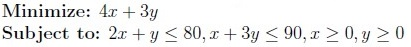
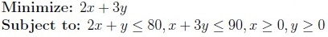
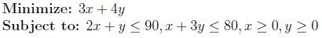
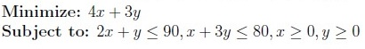
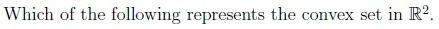
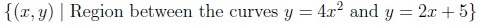
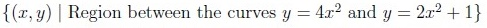
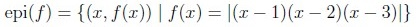
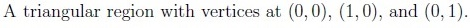
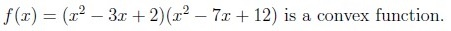
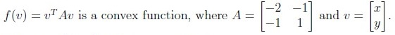
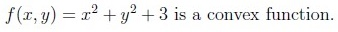
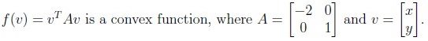
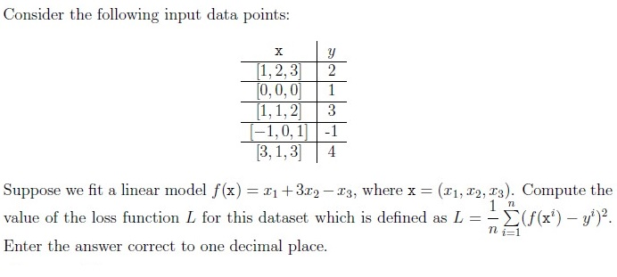
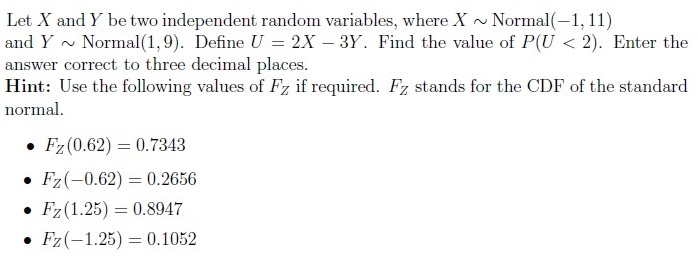
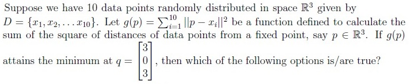
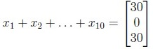
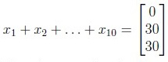
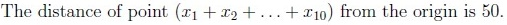
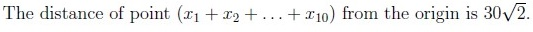
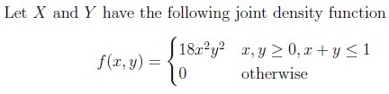
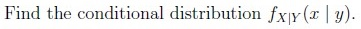
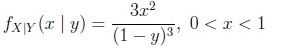
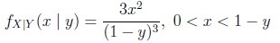
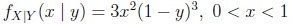
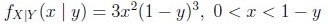
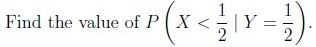
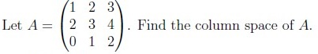
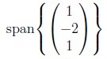
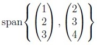
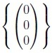
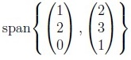
Auto-generated summary from the source site. Handy as a checklist; the lessons above explain each idea from scratch.
Here’s a structured summary of core topics, concepts, principles, and equations for the exam, followed by Mermaid knowledge graphs to visualize relationships.
Primal Problem Formulation:
Example (Q2, Q3):
\text{Minimize } 4x + 3y
\text{Subject to: }
2x + y \leq 80, \quad x + 3y \leq 90, \quad x, y \geq 0Convex Set (Q4):
Examples:
Convex Function (Q5):
A function is convex if:
f(\lambda x + (1-\lambda)y) \leq \lambda f(x) + (1-\lambda)f(y) \quad \forall \lambda \in [0,1]Tests:
Hessian Matrix: For , is convex if is positive semidefinite.
Unconstrained Optimization (Q6):
Steps:
Chebyshev’s Inequality (Q7):
Bounds probability of deviation from the mean:
P(|X - \mu| \geq k\sigma) \leq \frac{1}{k^2}Example: For , , :
P(|X - 70| \geq 24) \leq \frac{1}{9} \approx 0.11Linear Regression Loss (Q8):
Loss Function (MSE):
L = \frac{1}{n} \sum_{i=1}^n (f(x_i) - y_i)^2Normal Distribution & Linear Combinations (Q9):
If and , then:
U = aX + bY \sim N(a\mu_X + b\mu_Y, a^2\sigma_X^2 + b^2\sigma_Y^2)Example: where , :
U \sim N(2(-1) - 3(1), 4(11) + 9(9)) = N(-5, 127)Standardize to find :
P\left(Z < \frac{2 - (-5)}{\sqrt{127}}\right) \approx P(Z < 0.62) = 0.7343Joint & Conditional Distributions (Q13, Q14):
Conditional PDF:
f_{X|Y}(x|y) = \frac{f(x,y)}{f_Y(y)} = \frac{18x^2y^2}{\int_0^{1-y} 18x^2y^2 dx} = \frac{3x^2}{(1-y)^3}Conditional Probability:
P(X < 0.5 | Y = 0.5) = \int_0^{0.5} f_{X|Y}(x|0.5) dx = 1Eigenvalues & Diagonalization (Q10):
Given eigenvalue , let satisfy:
\lambda_1 + \lambda_2 + \lambda_3 = 3, \quad \lambda_1 \lambda_2 \lambda_3 = 2Column Space (Q15):
For , the column space is:
\text{span}\left\{ \begin{pmatrix} 1 \\ 2 \\ 0 \end{pmatrix}, \begin{pmatrix} 2 \\ 3 \\ 1 \end{pmatrix} \right\}(Equivalent to option D after simplification.)
Least Squares & Mean of Data (Q11):
Implication:
q = \frac{1}{10} \sum_{i=1}^{10} x_i \Rightarrow \sum_{i=1}^{10} x_i = 10q = \begin{pmatrix} 30 \\ 0 \\ 30 \end{pmatrix}Distance from origin:
\left\| \sum x_i \right\| = \sqrt{30^2 + 0^2 + 30^2} = 30\sqrt{2}Principal Component Analysis (PCA) (Q12):
Steps:
Key Points:
| Topic | Equation |
|---|---|
| Linear Programming | Minimize s.t. |
| Convex Function | |
| Chebyshev’s Inequality | |
| Normal Distribution | |
| Conditional PDF | |
| PCA Objective | Maximize s.t. |
| Least Squares | |
| Eigenvalues | , |